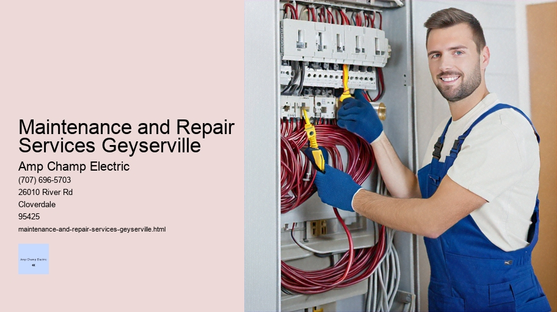

News
Electrical Installation Healdsburg
Electrical Installation Healdsburg
Electrical Installation Santa Rosa
Electrical Installation Cloverdale
Electrical Installation Geyserville
Electrical Installation Windsor
Maintenance and Repair Services Healdsburg
Maintenance and Repair Services Healdsburg
Maintenance and Repair Services Santa Rosa
Maintenance and Repair Services Cloverdale
Maintenance and Repair Services Geyserville
Maintenance and Repair Services Windsor
Electrical Safety Inspections Healdsburg
Electrical Safety Inspections Healdsburg
Electrical Safety Inspections Santa Rosa
Electrical Safety Inspections Cloverdale
Electrical Safety Inspections Geyserville
Electrical Safety Inspections Windsor
Energy Efficiency Upgrades Healdsburg
Energy Efficiency Upgrades Healdsburg
Energy Efficiency Upgrades Santa Rosa
Energy Efficiency Upgrades Cloverdale
Energy Efficiency Upgrades Geyserville
Energy Efficiency Upgrades Windsor
Specialty Electrical Services Healdsburg
Specialty Electrical Services Healdsburg
Specialty Electrical Services Santa Rosa
Specialty Electrical Services Cloverdale
Specialty Electrical Services Geyserville
Specialty Electrical Services Windsor
About Us
Contact Us

Maintenance and Repair Services Geyserville
Electrical Measurements
Title: The Essential Role of Maintenance and Repair Services in Modern Society
In the intricate tapestry of modern society, maintenance and repair services constitute the threads that keep the fabric of our daily lives intact. These services are so seamlessly woven into our routines that their presence often goes unnoticed until they are needed, much like a silent sentinel standing guard over the smooth operation of both our personal and professional worlds.
At its core, maintenance is defined as the work undertaken to keep equipment, machinery, buildings, and infrastructure in working order or to restore them to proper condition. Repair services step in when things break down or fail to function as intended. Together, these disciplines form an industry dedicated to preservation, longevity, and functionality.
The importance of regular maintenance cannot be overstated. In our homes, we rely on heating systems during cold winters and air conditioning during sweltering summers; we depend on refrigerators to preserve our food and water heaters for hot showers. All these appliances require routine check-ups to ensure they run efficiently and prevent unexpected breakdowns which can disrupt our comfort or even pose significant safety risks.
Electrical Hazard Awareness
On a larger scale, public infrastructure such as roads, bridges, tunnels, water supply systems, and power grids demand constant attention. The collapse or malfunction of any one component could lead not only to inconveniences but potentially catastrophic consequences for communities. Henceforth comes the role of specialized technicians who meticulously monitor these structures’ integrity with scheduled inspections and timely interventions.
Beyond convenience and safety lies another compelling reason for maintenance: cost savings. Regular upkeep helps identify potential problems before they escalate into major failures requiring expensive repairs or replacements. It extends the life span of assets by preventing wear-and-tear from taking its toll too quickly—this applies equally to a homeowner’s furnace as it does to an industrial manufacturer's heavy machinery.
Furthermore, in today's environmentally-conscious world where sustainability is paramount, maintenance plays a pivotal role in energy conservation. Properly maintained systems operate more efficiently using less resources—a win-win for both the wallet and planet Earth.
The field also contributes significantly toward economic stability by providing employment opportunities across a broad spectrum—from local handyperson businesses fixing leaky faucets to engineers maintaining complex industrial robots. This labor market is diverse enough that it offers roles suited for various skill levels while encouraging continuous learning through technological advances demanding new expertise.
Yet challenges abound within this sector; one such being the rapid pace at which technology evolves necessitating ongoing training for workers so they stay current with latest methodologies or emerging tools necessary for up-to-date service provision.
Despite such hurdles though lies opportunity—for innovation has consistently driven this industry forward leading towards smarter equipment capable self-diagnosis thereby enabling predictive maintenance strategies heralding further efficiency gains plus downtime reductions ultimately ensuring smoother societal operations overall.
In conclusion then emerges an undeniable truth: Maintenance repair services stand unwaveringly essential within contemporary civilization’s functioning fostering reliability resilience amidst ever-changing landscapes thus deserving recognition gratitude those hardworking individuals tirelessly labor behind scenes preserving quality life standards enjoyed globally today tomorrow beyond.
Title: Navigating the Maze of Electrical Troubleshooting: A Guide to Diagnosing Faults and Restoring Functionality
In the intricate web of modern electrical systems, the occurrence of faults and failures is an unavoidable aspect that requires meticulous attention. These complications not only pose a threat to the functionality of our devices and systems but also present potential safety hazards. Hence, troubleshooting these electrical hiccups is a critical skill set for electricians, technicians, and even informed laypersons who seek to maintain operational continuity in their daily lives.
**Understanding Electrical Systems**
At its core, troubleshooting is a systematic process of diagnosing the source of a problem within an electrical circuit or system. To effectively engage in this process, one must have a fundamental understanding of how electrical systems operate. Basic knowledge includes recognizing components such as resistors, capacitors, switches, and various types of wiring configurations – series and parallel circuits being primary examples.
**Preliminary Steps**
Before delving into any repair work, safety must be paramount. Ensuring that power is switched off before inspecting any equipment is essential to prevent electrocution or further damage to the system. The use of personal protective equipment (PPE) like insulated gloves and goggles should never be underestimated.
Once safety measures are in place, it's wise to perform an initial assessment which involves checking for obvious signs such as burnt smells, discoloration on outlets or switches, or unusual noises from appliances or machinery.
**The Troubleshooting Process**
Troubleshooting typically follows four main steps: identifying symptoms, isolating the issue, testing hypotheses through targeted experiments or checks, and finally repairing or replacing defective components.
1. **Identifying Symptoms**: This step involves understanding what has failed and how it manifests – whether it’s flickering lights indicating an unstable connection or complete power loss hinting at a tripped breaker.
2. **Isolating the Issue**: Once symptoms are clear, pinpointing where in the circuitry the fault lies becomes crucial. This often means tracing pathways back from where symptoms occur using schematics if available.
3. **Testing Hypotheses**: With potential culprits in mind – be they faulty wires or damaged components – targeted testing with tools like multimeters can help confirm suspicions by measuring voltage levels across different parts of the circuitry.
4. **Repairing or Replacing Defective Components**: After identifying faulty elements within an electrical system comes rectification through precise repairs—resoldering loose connections—or outright replacement if parts are beyond salvageable condition.
**Common Issues & Solutions**
Many common problems can stem from simple oversights; tripped circuit breakers may just need resetting while blown fuses require replacements matching their specific ratings.
Arc Flash Protection
Loose connections might call for tightening terminal screws while short circuits necessitate more thorough investigation since they could result from exposed wiring touching conductive surfaces causing dangerous current paths.
For more intricate issues such as intermittent faults—which come and go unpredictably—a methodical approach involving recording when they happen could uncover patterns pointing towards environmental factors like moisture affecting performance during certain weather conditions.
One cannot overlook preventive maintenance either; regular inspection schedules can preempt failures before they arise by spotting early warning signs like fraying insulation on wires which may otherwise go unnoticed until malfunction occurs.
**Conclusion**
Electrical troubleshooting is akin to detective work requiring patience combined with analytical thinking skills complemented by practical hands-on experience with tools-of-the-trade ranging from screwdrivers to oscilloscopes depending on complexity involved in resolving given scenarios encountered across residential commercial industrial settings alike.
In conclusion navigating maze-like intricacies inherent within diagnosing electrical faults ultimately leads restoration smooth operation ensuring safe dependable environment all reliant upon steadfast vigilance those tasked maintaining lifeblood flowing through veins our technologically driven world.
electrical-installation-healdsburg.html
electrical-installation-santa-rosa.html
electrical-installation-cloverdale.html
electrical-installation-geyserville.html
electrical-installation-windsor.html
maintenance-and-repair-services-healdsburg.html
maintenance-and-repair-services-santa-rosa.html
maintenance-and-repair-services-cloverdale.html
maintenance-and-repair-services-geyserville.html
maintenance-and-repair-services-windsor.html
electrical-safety-inspections-healdsburg.html
electrical-safety-inspections-santa-rosa.html
electrical-safety-inspections-cloverdale.html
electrical-safety-inspections-geyserville.html
electrical-safety-inspections-windsor.html
energy-efficiency-upgrades-healdsburg.html
energy-efficiency-upgrades-santa-rosa.html
energy-efficiency-upgrades-cloverdale.html
energy-efficiency-upgrades-geyserville.html
energy-efficiency-upgrades-windsor.html
specialty-electrical-services-healdsburg.html
specialty-electrical-services-santa-rosa.html
specialty-electrical-services-cloverdale.html
specialty-electrical-services-geyserville.html
specialty-electrical-services-windsor.html
privacy-policy.html
sitemap.html
sitemap.xml
about-us.html
feed.xml
Regular electrical system inspections
Regular electrical system inspections are an essential practice for ensuring the safety, reliability, and efficiency of any electrical infrastructure. Whether in residential homes, commercial buildings, or industrial complexes, these periodic examinations help to detect potential hazards before they escalate into serious problems.
To start with, regular inspections contribute significantly to the prevention of fire hazards. Electrical fires account for a substantial portion of domestic and commercial property damage each year. Often caused by faulty wiring, overloaded circuits, or malfunctioning appliances, such fires can be prevented if the warning signs are identified early on through routine checks.
Electricians conducting these inspections look for several indicators of potential trouble. They examine the condition of wires and cables for any signs of fraying, corrosion or insulation breaches that could lead to short circuits.
Security System Wiring
Outlets and switches are tested for proper function and checked to ensure they are not loose or damaged.
Ceiling Fan Installation
The service panel is scrutinized for any irregularities like tripped breakers or blown fuses which may indicate circuit overloads.
In addition to preventing fires, inspections also aim at avoiding electrical shocks—a danger that lurks wherever there is electricity. Faulty grounding systems, compromised insulation, and defective equipment can all pose risks of electric shock. Regular assessments thus include testing ground fault circuit interrupters (GFCIs) to make sure that they trip as expected when a ground fault occurs.
Another aspect where regular electrical system inspections prove valuable is in energy efficiency. As technology advances and more devices become integral parts of our lives at home and work, the demand on electrical systems increases tremendously. An inspection can spot inefficient appliances or outdated wiring that may be drawing more power than necessary leading to inflated energy bills.
Moreover, local codes and regulations often mandate that building owners maintain their electrical systems according to certain standards. Regularly scheduled inspections ensure compliance with these rules thereby protecting owners from legal liabilities while providing peace of mind knowing that their properties meet current safety benchmarks.
For businesses particularly those that operate critical machinery downtime due to unexpected power outages can have significant financial implications including lost productivity customer dissatisfaction and even reputational damage Inspections serve as a proactive measure allowing electricians to identify components showing wear-and-tear so they may be replaced during planned maintenance windows rather than failing unexpectedly during peak operation times
Homeowners too benefit from regular check-ups Especially in older homes where aging infrastructure might struggle under modern loads These evaluations provide homeowners with updates on what changes might need consideration whether immediate or down the road It's an opportunity too for residents who aren't familiar with electrical principles to gain insights into their own home's workings something especially useful if renovations or expansions are contemplated
Ultimately regular electrical system inspections embody an ounce-of-prevention philosophy They're about identifying small issues before they balloon into larger ones ensuring continuity preserving assets reducing liabilities maximizing operational uptime enhancing energy conservation promoting overall well-being In a world increasingly dependent upon stable robust electricity this practice isn't just advisable it's indispensable
Repair of damaged wires or components
Repair of Damaged Wires or Components: An Insight into Restoration and Safety
In an era where technology governs nearly every aspect of our lives, the integrity of electrical wires and components holds paramount importance. These conduits and devices form the nervous system of our homes, workplaces, and industries, transmitting power and data essential for modern existence. However, they are not immune to damage from wear and tear, environmental factors, or unexpected events.
Electrical Measurements
The repair of damaged wires or components is therefore a crucial task that demands attention to detail, adherence to safety standards, and a thorough understanding of electrical systems.
When we encounter faulty wiring or malfunctioning components in an electrical system, immediate action is required to prevent potential hazards such as electrical fires, equipment failures, or even personal injury. Repair work begins with a comprehensive diagnosis to determine the extent and source of the damage. This diagnostic phase often involves visual inspections for frayed wires or burnt components; testing for continuity using multimeters; and assessing any signs of corrosion or overheating.
Once the issue has been identified accurately, preparation for the repair process can commence. Ensuring safety during this operation is non-negotiable – power supply to the concerned circuit must be cut off to avoid electrocution risks. In professional settings, this step includes following lockout/tagout procedures which ensure that circuits cannot be energized inadvertently while repair work is ongoing.
The actual repair work varies depending on the nature of damage encountered. For simple wire repairs such as those caused by nicks or cuts in insulation, electricians often use heat-shrink tubing or high-quality electrical tape to seal breaches after ensuring that wire conductors themselves are not compromised. If conductors show signs of damage – perhaps due to overloading – they would need splicing followed by proper insulation restoration.
More complex component repairs may involve soldering broken connections on printed circuit boards (PCBs), replacing capacitors or resistors showing signs of failure, or reworking entire sections if short-circuiting has occurred. Each step requires precision; using incorrect materials or improper techniques could lead not only to further damage but also compromise the functionality and safety post-repair.
In instances where repair might not be safe or cost-effective – especially when dealing with outdated components no longer meeting current standards – replacement becomes necessary. It's critical here for professionals to choose compatible replacements that comply with regulations while fitting seamlessly into existing systems without causing additional strain on other parts.
After repairing damaged areas comes testing: a vital stage wherein repaired circuits are evaluated under controlled conditions before being returned back into service. Tests assess whether repairs have restored full functionality without introducing new issues such as voltage drops at connection points that could indicate poor quality workmanship.
Finally yet importantly is documentation – a step often overlooked in informal settings but indispensable within professional realms for tracking maintenance histories and verifying compliance with codes like National Electrical Code (NEC) guidelines in the United States.
In conclusion, repairing damaged wires or components goes beyond mere technical know-how; it encapsulates a holistic approach involving problem-solving skills coupled with stringent safety measures aimed at preserving life and property alike. As we continue advancing technologically as a society – moving towards smart grids in energy distribution systems and internet-of-things (IoT) enabled devices everywhere – meticulousness in these repairs will remain integral in maintaining reliable infrastructures that support our digital-driven lifestyles.
Replacement of outdated electrical equipment
Title: The Imperative of Upgrading Obsolete Electrical Equipment
In the contemporary world, where technology evolves at an unprecedented pace, electrical equipment is no exception to the inevitability of becoming outdated. The replacement of such obsolete apparatus is not merely a suggestion but an imperative for several cogent reasons that span safety, efficiency, and sustainability.
To begin with, safety stands as the paramount concern in any discussion regarding electrical systems. Outdated electrical equipment poses significant risks including fire hazards, electric shocks, and other potentially life-threatening incidents. As components age, they are more susceptible to wear and tear; insulation may break down, connections can loosen, and the overall integrity of the system can degrade. These deteriorations increase the likelihood of short circuits or overheating, which can lead to fires or serious injuries. Keeping these systems updated ensures adherence to current safety standards designed to protect both individuals and property.
Efficiency is another cornerstone advocating for the replacement of old electrical equipment. Modern advancements have led to more energy-efficient designs that consume less power while delivering equal or improved performance. By upgrading outdated systems, homes and businesses can benefit from reduced energy consumption leading to lower utility bills and a lesser environmental impact. Energy-efficient appliances also often come with enhanced features and capabilities that provide users with greater control over their energy usage through smart technology integration.
Moreover, updating obsolete electrical equipment aligns with global efforts toward sustainability. With an increasing focus on reducing carbon footprints and preserving natural resources, modern electrical devices are engineered to be eco-friendlier by minimizing waste production during their operational lifespan as well as being more recyclable at the end of their useable life. This transition supports broader initiatives aimed at combating climate change by decreasing greenhouse gas emissions associated with electricity generation.
Furthermore, technological obsolescence impairs productivity both in residential settings and within industries.
Maintenance and Repair Services Geyserville - Security System Wiring
Security System Wiring
Arc Flash Protection
Electrical Hazard Awareness
Electrical Fires
Old machinery might not be compatible with newer technologies or software updates required for optimal operation in today's digital ecosystem. Replacing these outdated units eliminates potential bottlenecks created by inefficient equipment that cannot keep up with current demands or integrate smoothly into modern automated processes.
From a financial perspective too there exists a compelling case for timely upgrades; maintaining old equipment often becomes increasingly expensive as spare parts become scarce and failure rates rise. Such expenditures could be better allocated towards investing in new technology that promises longevity and reduced maintenance costs over time.
However worthwhile this undertaking may seem though it is not without challenges; chief among them being cost implications associated primarily with initial investment outlays necessary for purchasing new equipment along with possible downtime incurred during installation phases But strategic planning structured financing options like leasing arrangements government incentives available certain regions help mitigate such concerns make transition manageable feasible scale organizations individuals alike
In conclusion replacing outdated electrical infrastructure represents a critical step forward on multiple fronts It enhances public private sector safety increases operational efficiency contributes positively towards environmental stewardship drives economic benefits through improved productivity lower long-term costs Given its comprehensive advantages it behooves all stakeholders actively pursue facilitate regular updates ensure continuity resilience vitality our shared electrified future
Maintenance and Repair Services Windsor
Emergency repair services for power outages
Title: The Essential Role of Emergency Repair Services During Power Outages
In the modern world, our daily lives are inextricably linked to the uninterrupted flow of electricity. From lighting our homes to powering industries, electricity is the invisible force that drives progress and comfort. However, this reliance on electrical power also leaves us vulnerable to disruptions caused by power outages. These outages can occur due to various reasons such as natural disasters, equipment failure, or maintenance issues. When these interruptions strike, emergency repair services for power outages become indispensable in restoring normalcy and preventing chaos.
Emergency repair services are specialized teams trained to respond swiftly and effectively when a power outage occurs. Their role extends beyond merely fixing a technical fault; they provide a crucial service that can have far-reaching implications for safety, economic stability, and the quality of life.
Electrical Fires
Firstly, consider the immediate inconvenience and potential dangers posed by an abrupt loss of power. Homes are plunged into darkness, heating or cooling systems fail irrespective of extreme weather conditions outside, food preservation systems cease to function leading to spoilage, and security systems may be compromised. In healthcare facilities or hospitals where lives depend on constant electrical supply for critical machinery like ventilators or monitoring systems - even a momentary disruption can mean the difference between life and death.
The ability of emergency repair crews to quickly identify and solve these issues is nothing short of remarkable. They operate around-the-clock under challenging conditions—be it during severe weather or in remote locations—to locate faults within complex grid networks and execute repairs with precision and efficiency.
Secondly, from an economic perspective, prolonged power outages can be disastrous for businesses both large and small. Production lines stop moving in factories resulting in financial losses through unmet contracts or spoiled materials; retail operations cannot process transactions without electronic point-of-sale systems; data centers risk data loss which could have significant consequences for digital infrastructure across sectors.
Emergency repair services mitigate these economic risks by employing advanced diagnostic tools coupled with their expertise to minimize downtime. With faster restoration times thanks to these dedicated professionals, businesses face less disruption leading to greater resilience against unforeseen electrical failures.
Moreover, emergency response teams play a vital role in maintaining public order during extended blackouts which might otherwise lead to looting or other forms of civil disorder due to reduced surveillance capabilities or simply because darkened streets may embolden criminal activity.
It's important too not underestimate the psychological impact prolonged periods without electricity can have on individuals—the stress associated with uncertainty about when power will be restored can take its toll on mental health especially if communication channels are down too leaving people cut off from news updates about recovery efforts.
Behind each successful restoration effort lies extensive preparation including rigorous training regimes ensuring team members remain ready for any eventuality alongside ongoing investment into technology that supports their work whether this means durable vehicles capable navigating difficult terrains or state-of-the-art equipment enabling rapid fault detection amidst vast network infrastructures stretching across cities towns rural areas alike.
Furthermore community outreach programs run by utility companies often involve collaborating closely with emergency repair service providers educating public regarding how best prepare themselves before possible outage situations thus fostering proactive rather than reactive mindset amongst consumers enhancing overall resilience community level as well being individual households' preparedness plans case unexpected does arise
In conclusion while we often take uninterrupted access electricity granted truth remains only through relentless efforts those working behind scenes particularly those offering emergency repair services do we enjoy such continuous convenience comfort If anything reflection upon importance integral roles played by these unsung heroes should inspire appreciation understanding significance ensuring robust reliable energy infrastructure place – safeguarding functioning society every sense word
About
About Geyserville
Check our other pages :
Electrical Safety Inspections Santa Rosa
Specialty Electrical Services Geyserville
Energy Efficiency Upgrades Windsor
Electrical Installation Geyserville
Electrical Safety Inspections Cloverdale
Frequently Asked Questions
What types of electrician services are available in Geyserville?
In Geyserville, electrician services typically include residential and commercial electrical repairs, wiring and rewiring, panel upgrades, installation of lighting fixtures, troubleshooting electrical issues, and maintenance of existing electrical systems.
Are emergency electrician services offered in Geyserville?
Yes, many electricians in Geyserville offer emergency services for urgent electrical problems that occur outside of normal business hours. Its important to check with individual service providers for their availability.
How do I know if an electrician in Geyserville is licensed and qualified?
You should ask the electrician for proof of licensing as required by California state law. Also, you can verify their qualifications by checking reviews or asking for references from past clients.
Can a local Geyserville electrician handle smart home device installations?
Many electricians in Geyserville are equipped to handle smart home device installations such as smart thermostats, security systems, and automated lighting. Confirm with the service provider that they have experience with smart technology before hiring them.
What should I expect to pay for electrician services in Geyserville?
The cost of electrician services in Geyserville will vary depending on the complexity and scope of the job. Minor repairs may be less costly than major installations or whole-home rewiring projects. Its best to get a detailed quote from the service provider after they assess your specific needs.
Maintenance and Repair Services Geyserville